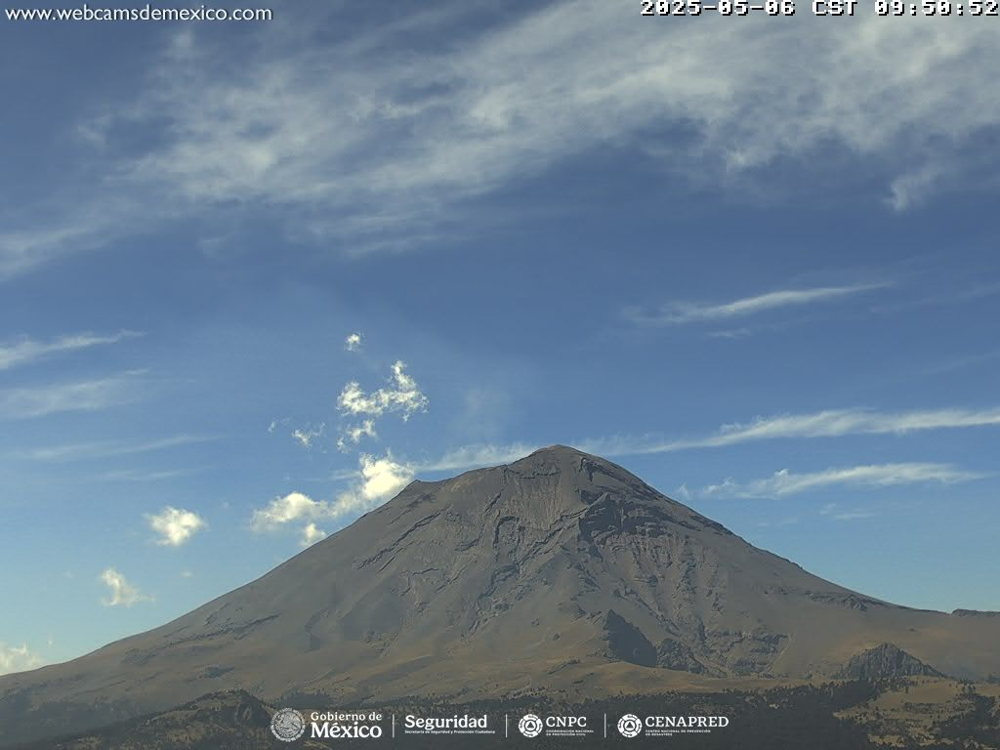

Popocatépetl registra 17 exhalaciones; autoridades mantienen vigilancia

El volcán Popocatépetl, uno de los más activos de México, registró en las últimas 24 horas 17 exhalaciones de baja intensidad acompañadas de vapor de agua, gases volcánicos y ligeras cantidades de ceniza. Además, se contabilizaron 55 minutos de tremor armónico de baja amplitud, indicaron autoridades del Centro Nacional de Prevención de Desastres (CENAPRED).
Las emisiones se dirigieron principalmente al este-sureste, sin que se reportaran afectaciones significativas en comunidades cercanas. Sin embargo, el CENAPRED mantiene una constante vigilancia del coloso ante la posibilidad de un incremento en su actividad.
Medidas de prevención
Las autoridades han reiterado a la población que respete el radio de seguridad de 12 km alrededor del cráter, donde está prohibido el acceso. Además, se recomienda cubrir depósitos de agua, evitar actividades al aire libre en caso de caída de ceniza y estar atentos a los comunicados oficiales.
En cuanto al tráfico aéreo, se notificó a las aerolíneas sobre la dirección de la columna de vapor y gases, aunque no se reportaron interrupciones en los vuelos.
Actividad constante
El Popocatépetl, con una altitud de 5,426 metros sobre el nivel del mar, ha mostrado una actividad constante en los últimos meses, con emisiones de gases, ceniza y tremores armónicos. El semáforo de alerta volcánica permanece en Amarillo Fase 2, lo cual implica que se pueden esperar explosiones de baja a moderada intensidad, así como lluvias de ceniza en comunidades cercanas.
Las autoridades invitan a la población a mantenerse informada a través de los canales oficiales del CENAPRED y la Coordinación Nacional de Protección Civil, y evitar difundir rumores para no generar alarma innecesaria.